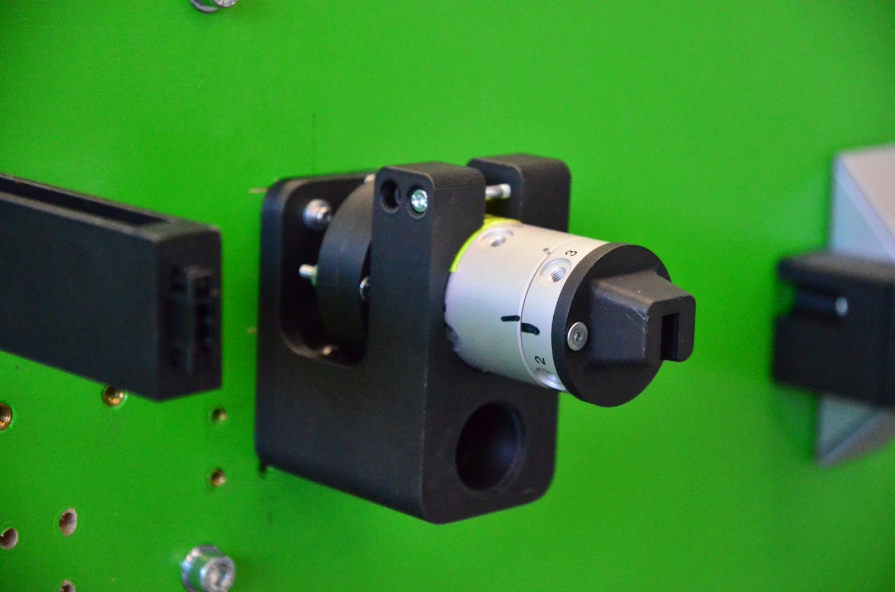

← Alle Projekte

Verdrilleinheit für Leitungen
FAU – Lehrstuhl FAPS | Konstruktion und Aufbau
Motorisches Verdrillmodul für Leitungen

Was?
- Eine kompakte Verdrilleinheit für den Aufbau der Robotik Challenge: sie hält das Leitungsende in einer Steckeraufnahme und dreht es, um die Leitung zu verdrillen.
Wie?
- Konstruktion von Halter, Motorkupplung und Steckeraufnahme um einen igus-Schrittmotor und eine Drehdurchführung.
- Closed-Loop-Schrittmotorantrieb (CL42T) mit Arduino Nano; Drehzahltests bis 600 U/min.
- Gedruckte Bauteile für schnelle Iterationen; direkte Montage auf dem Aufgabenboard.
Ergebnisse
- Aufgebaute und getestete Einheit, integriert in das Aufgabenboard der Robotik Challenge.
- Macht das Verdrillen – einen typischen Prozessschritt der Bordnetzfertigung – als Roboteraufgabe verfügbar.